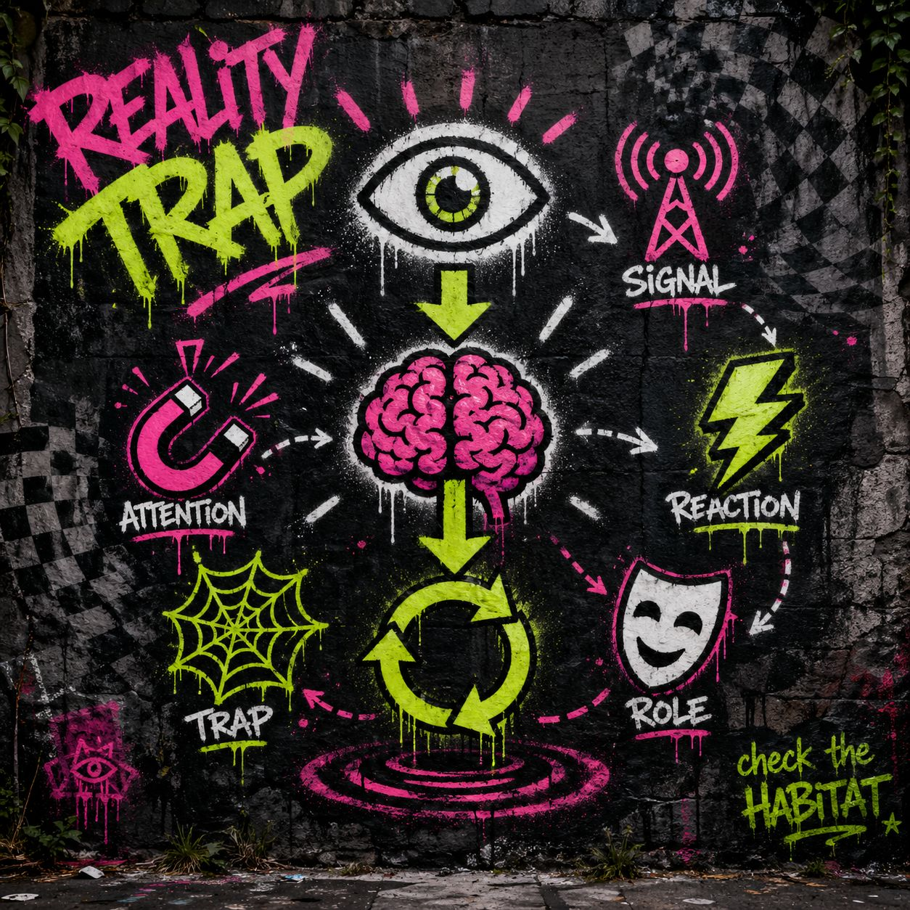

You are not just reacting to the world.
You are reacting inside a perception environment that is already shaping how the world appears to you.
The problem:
You cannot feel the environment.
You only feel what it produces.
The habitat does not announce itself.
It disguises itself as:
your reasoning
your instincts
your interpretation of events
It does not say: “you are inside me”
It says:
👉 “this is just how things are”
Each habitat rewrites perception so completely that it feels like truth instead of influence:
🔥 Outrage Habitat
→ anger feels like moral clarity
🌫️ Doom Habitat
→ heaviness feels like realism
🕸️ Paranoia Habitat
→ suspicion feels like intelligence
🧱 Control Habitat
→ compliance feels like rational behavior
The shift is subtle but absolute:
environment → emotion → meaning → “truth”
Once inside a habitat:
You don’t observe it.
You speak from it.
It becomes:
your tone
your urgency
your sense of what matters
your sense of who is right or wrong
At this point:
You are no longer reacting to reality.
👉 You are expressing the environment.
No external force needed.
The system sustains itself internally.
People are not “losing control.”
They are stabilizing within a different environment.
From the inside:
It feels consistent.
It feels justified.
It feels obvious.
From the outside:
It looks extreme.
It looks irrational.
It looks confusing.
Both views are real depending on position in the field.
You do not fight the content.
You look for the environment.
Ask:
What feels obvious right now?
What feels urgent right now?
What feels unquestionably true?
Then ask:
👉 What kind of environment would make this feel this way?
That question creates distance.
Distance breaks the merge.
If it feels like absolute reality…
check the habitat.
Because the most powerful environments are the ones that disappear into your thinking.
👁️ See the habitat → regain separation